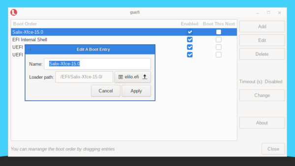

GUEFI is a Python/GTK+3 application that acts as a frontend for
efibootmgr. It provides an easy to use interface for managing UEFI boot
options.
Using GUEFI you can:
- Create a new UEFI boot entry
- Edit a UEFI boot entry
- Delete a UEFI boot entry
- Change the UEFI boot order
- Enable/disable a UEFI boot entry
- Configure a UEFI boot entry to be the default during the next boot
only
